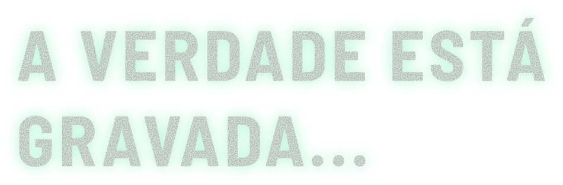

NOTÍCIAS
THE OUTLAST TRIALS: NOVA ATUALIZAÇÃO TRAZ NOVOS DESAFIOS E RECOMPENSAS
A Red Barrels anunciou uma nova atualização para The Outlast Trials com novos mapas, objetivos e melhorias gerais...
LER MAISTEORIAS: O SIGNIFICADO POR TRÁS DOS EXPERIMENTOS DA MURKOFF
Uma análise profunda sobre os experimentos da Murkoff Corporation e como eles conectam todos os jogos da franquia.
LER MAISCURIOSIDADES: 15 FATOS SOBRE OUTLAST QUE VOCÊ (PROVAVELMENTE) NÃO SABIA
Detalhes escondidos, referências e segredos que tornam Outlast uma das franquias de terror mais assustadoras.
LER MAIS